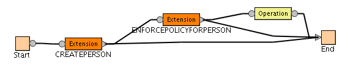
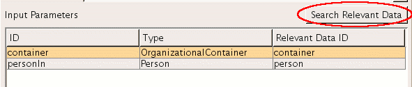
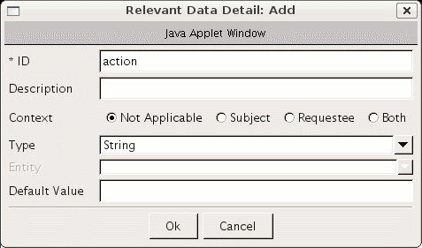
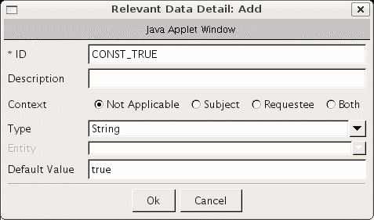
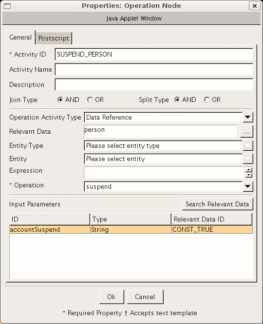
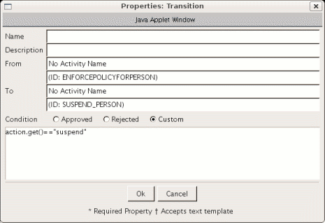
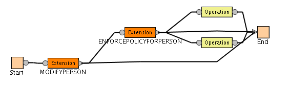

|
|
|


Introduction
It is sometimes convenient to use the erPersonStatus attribute in person add and modify operations to cause a person and his/her accounts to be suspended or restored. For example, it may be desirable to use a DSML feed to suspend or restore users using this attribute. (The "Use workflow" checkbox on the DSML service form must be checked for these examples to work.) The following two sections provide an overview of how this may be done. The complete XML definitions for these examples may be found in person_add.xml and person_modify.xml.
To get to the workflow editor for the two examples, navigate to Configure System > Manage Operations, select Entity Type level for Operation Level, and Person for Entity type. Then select add operation for the first example, and modife for the second.
Configuring the Person Add Operation to Use erPersonStatus
Add Operation Node
- Create a new Operation node.
- Create a link from the output of the ENFORCEPOLICYFORPERSON node to the input of the new Operation node.
- Create a link from the output of the new Operation node to the End node.
- If you click on the Update button, the nodes should be organized like Figure 1.

Figure 1 - Added Operation node
Update CREATEPERSON node
- Double-click on the new CREATEPERSON Node to open the properties dialog.
- Under Input Parameters select the item with the ID container then click on the Search Relevant Data button above the selection area.

Figure 2 - Click on the Add button to create a new Relevant Data Item
with and ID of action and type of String.

Figure 3 - action Relevant Data Item
- Add a second new relevant data item with ID CONST_TRUE of String
type, and set the default value to true.

Figure 4 - CONST_TRUE Relevant Data Item
Once you have added CONST_TRUE, select the relevant data item with the id container and click OK. (If you don't first select container, you will get an error when you click OK.) - Use the following script as the postscript to the CREATEPERSON
activity:
var personObj = person.get(); var personStatus = personObj.getProperty("erpersonstatus"); if(personStatus != null && personStatus.length > 0) { if(personStatus[0] == 1) { action.set("suspend"); } else { action.set("none"); } } else { action.set("none"); }
Update the new Operation node
- Double click on the Operation node to open the properties dialog.
- Set the Activity Id to SUSPEND_PERSON.
- Set the Operation Activity Type to Data Reference.
- Set the Relevant Data field to person.
- Set the Operation to suspend.
- Set the accountSuspend parameter to CONST_TRUE using the Search Relevant Data button.
- When you are done, the Operation node properties dialog should look like figure 5.

Figure 5 - Operations node properties dialog
Update transitions between nodes
- Double click on the transition from ENFORCEPOLICYFORPERSON to SUSPEND_PERSON
to open the Transitions dialog and set the transition condition to: action.get()=="suspend".

Figure 6 - Transition condition properites dialog - Set the transition condition for the ENFORCEPOLICYFORPERSON to END transition to: action.get()=="none".
Configuring the Person Modify Operation to use erPersonStatus
Add new nodes and transitions
- Create two new Operation nodes.
- Add a transition from the output of ENFORCEPOLICYFORPERSON to the input of each new Operation Node.
- Add a transition from the output of each new Operation Node to the End node.
- If you click the Update button, the nodes should be organized like Figure 7.

Figure 7 - Modify operation layout
Update Start node
- Open the Start node's properties dialog.
- Use the following script in the JavaScript section.
var person = Entity.get(); action.set("none"); var changes = person.getChanges(); if(changes != null && changes.length > 0) { for (i =0 ; i < changes.length ; i++) { var op = changes[i].op; if(op == 1 || op == 2 || op == 3) { var name = changes[i].attr; if(name == "erpersonstatus") { var values = changes[i].values; if(values[0] == "1") { action.set("suspend"); } else { action.set("restore"); } } } } } - Save the Start node.
Update the new Operation nodes
- Open the properties dialog of one of the new Operations nodes.
- Set the Activity Id to SUSPEND_PERSON.
- Set the Operation Activity Type to Data Reference.
- Click on the eplisis (...) button next to the Relevant Data field.
- Add a new Relevant data item with id action and type String.
- Add a second new Relevant data item with id CONST_TRUE, type String, and defaut value true.
- Select the Relevant data item with id Entity and click Ok.
- Set the Operation to suspend.
- Set the accountSuspend parameter to CONST_TRUE.
- Open the properties dialog of the second new Operation node.
- Set the Activity Id to RESTORE_PERSON.
- Set the Operation Activity Type to Data Reference.
- Set the Relevant Data field to Entity.
- Set the Operation to restore.
- Set the accountRestore parameter to CONST_TRUE.
Update transitions between nodes
- Update the transition from ENFORCEPOLICYFORPERSON to SUSPEND_PERSON and set the transition condition to: action.get()=="suspend"
- Update the transition from ENFORCEPOLICYFORPERSON to RESTORE_PERSON and set the transition condition to: action.get()=="restore"
- Update the transition from ENFORCEPOLICYFORPERSON to END transition to: action.get()=="none"
- Ensure that the split condition for ENFORCEPOLICYFORPERSON is set to "OR".